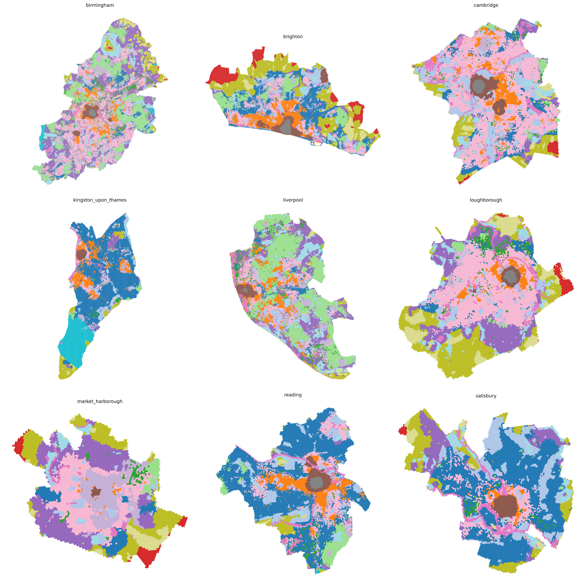

Urban Similarity Embeddings | Geospatial Foundation Model
Current project developing a geospatial foundation model that learns 64-dimensional similarity embeddings representing the unique character of urban places. These embeddings capture complex urban characteristics in a high-dimensional space and can support a wide range of downstream urban analysis and modelling tasks..